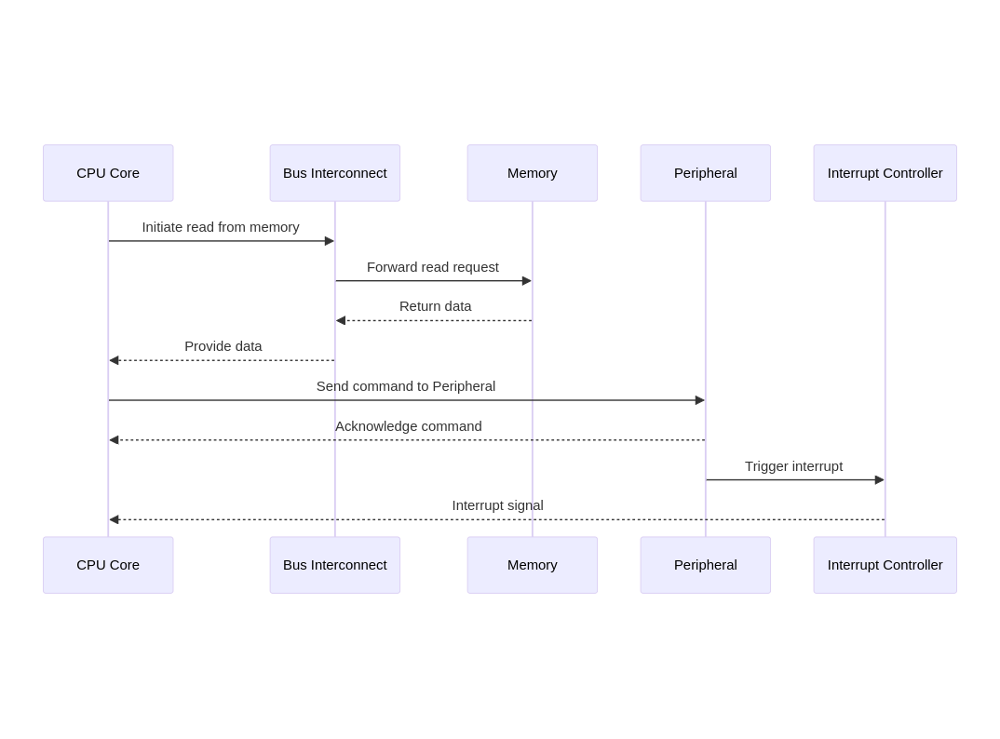

Architecture#
Scheduling messages on a peripheral bus like Controller Area Network (CAN) is analogous to scheduling tasks by fixed priorities. We therefore take a brief detour into communication inside a SOC for transactions happening with a single processor.
Sequence Diagram for transactions inside a SOC#

- CPU Core initiates a read operation through the Bus Interconnect to the Memory.
- Memory responds with the requested data back to the CPU Core through the Bus Interconnect.
- CPU Core sends a command to a Peripheral.
- Peripheral acknowledges the command back to the CPU Core.
- Peripheral triggers an interrupt to the Interrupt Controller.
- Interrupt Controller sends an interrupt signal to the CPU Core.
Modification to Litex for Real Time Systems#
We propose to replace the interrupt controller for Vexriscv in Litex with an implementation of the RISC-V CLIC specifciation, which provides the core with key features such as prioritization by level and priority, selective hardware vectoring, and non-nested interrupt optimization (tail-chaining through the xnxti CSR) directly as RISC-V standard extension.
Proposed Plan#
Detailed roadmap for the proposal can be found at Roadmap.